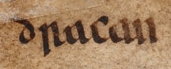

A dragon is a large magical legendary creature that appears in the folklore of multiple cultures worldwide. Beliefs about dragons vary considerably through regions, but dragons in western cultures since the High Middle Ages have often been depicted as winged, horned, and capable of breathing fire. Dragons in eastern cultures are usually depicted as wingless, four-legged, serpentine creatures with above-average intelligence. Commonalities between dragons' traits are often a hybridization of feline, reptilian, mammal, and avian features. Scholars believe vast extinct or migrating crocodiles bear the closest resemblance, especially when encountered in forested or swampy areas, and are most likely the template of modern Asian dragon imagery.[1][2]

The word dragon entered the English language in the early 13th century from Old French dragon, which, in turn, comes from the Latin: draco (genitive draconis) meaning "huge serpent, dragon", from Ancient Greek δράκων, drákōn (genitive δράκοντος, drákontos) "serpent".[4][5] The Greek and Latin term referred to any great serpent, not necessarily mythological.[6] The Greek word δράκων is most likely derived from the Greek verb δέρκομαι (dérkomai) meaning "I see", the aorist form of which is ἔδρακον (édrakon).[5] This is thought to have referred to something with a "deadly glance,"[7] or unusually bright[8] or "sharp"[9][10] eyes, or because a snake's eyes appear to be always open; each eye actually sees through a big transparent scale in its eyelids, which are permanently shut. The Greek word probably derives from an Indo-European base *derḱ- meaning "to see"; the Sanskrit root दृश् (dr̥ś-) also means "to see".[11]
Draconic creatures appear in virtually all cultures around the globe[12] and the earliest attested reports of draconic creatures resemble giant snakes. Draconic creatures are first described in the mythologies of the ancient Near East and appear in ancient Mesopotamian art and literature. Stories about storm-gods slaying giant serpents occur throughout nearly all Near Eastern and Indo-European mythologies.
Nonetheless, scholars dispute where the idea of a dragon originates from[13] and a wide variety of hypotheses have been proposed.[13]
In his book An Instinct for Dragons (2000), David E. Jones (anthropologist) suggests a hypothesis that humans, like monkeys, have inherited instinctive reactions to snakes, large cats, and birds of prey.[14] He cites a study which found that approximately 39 people in a hundred are afraid of snakes[15] and notes that fear of snakes is especially prominent in children, even in areas where snakes are rare.[15] The earliest attested dragons all resemble snakes or have snakelike attributes.[16] Jones therefore concludes that dragons appear in nearly all cultures because humans have an innate fear of snakes and other animals that were major predators of humans' primate ancestors.[17] Dragons are usually said to reside in "dark caves, deep pools, wild mountain reaches, sea bottoms, haunted forests", all places which would have been fraught with danger for early human ancestors.[18]
In her book The First Fossil Hunters: Dinosaurs, Mammoths, and Myth in Greek and Roman Times (2000), Adrienne Mayor argues that some stories of dragons may have been inspired by ancient discoveries of fossils belonging to dinosaurs and other prehistoric animals.[19] She argues that the dragon lore of northern India may have been inspired by "observations of oversized, extraordinary bones in the fossilbeds of the Siwalik Hills below the Himalayas"[20] and that ancient Greek artistic depictions of the Monster of Troy may have been influenced by fossils of Samotherium, an extinct species of giraffe whose fossils are common in the Mediterranean region.[20] In China, a region where fossils of large prehistoric animals are common, these remains are frequently identified as "dragon bones"[21] and are commonly used in traditional Chinese medicine.[21] Mayor, however, is careful to point out that not all stories of dragons and giants are inspired by fossils[21] and notes that Scandinavia has many stories of dragons and sea monsters, but has long "been considered barren of large fossils."[21] In one of her later books, she states that, "Many dragon images around the world were based on folk knowledge or exaggerations of living reptiles, such as Komodo dragons, Gila monsters, iguanas, alligators, or, in California, alligator lizards, though this still fails to account for the Scandinavian legends, as no such animals (historical or otherwise) have ever been found in this region."[22]
Robert Blust in The Origin of Dragons (2000) argues that, like many other creations of traditional cultures, dragons are largely explicable as products of a convergence of rational pre-scientific speculation about the world of real events. In this case, the event is the natural mechanism governing rainfall and drought, with particular attention paid to the phenomenon of the rainbow.[23]
In Egyptian mythology, Apep or Apophis is a giant serpentine creature who resides in the Duat, the Egyptian Underworld.[24][25] The Bremner-Rhind papyrus, written around 310 BC, preserves an account of a much older Egyptian tradition that the setting of the sun is caused by Ra descending to the Duat to battle Apep.[24][25] In some accounts, Apep is as long as the height of eight men with a head made of flint.[25] Thunderstorms and earthquakes were thought to be caused by Apep's roar[26] and solar eclipses were thought to be the result of Apep attacking Ra during the daytime.[26] In some myths, Apep is slain by the god Set.[27] Nehebkau is another giant serpent who guards the Duat and aided Ra in his battle against Apep.[26] Nehebkau was so massive in some stories that the entire earth was believed to rest atop his coils.[26] Denwen is a giant serpent mentioned in the Pyramid Texts whose body was made of fire and who ignited a conflagration that nearly destroyed all the gods of the Egyptian pantheon.[28] He was ultimately defeated by the Pharaoh, a victory which affirmed the Pharaoh's divine right to rule.[29]
The ouroboros was a well-known Egyptian symbol of a serpent swallowing its own tail.[30] The precursor to the ouroboros was the "Many-Faced",[30] a serpent with five heads, who, according to the Amduat, the oldest surviving Book of the Afterlife, was said to coil around the corpse of the sun god Ra protectively.[30] The earliest surviving depiction of a "true" ouroboros comes from the gilded shrines in the tomb of Tutankhamun.[30] In the early centuries AD, the ouroboros was adopted as a symbol by Gnostic Christians[31] and chapter 136 of the Pistis Sophia, an early Gnostic text, describes "a great dragon whose tail is in its mouth".[31] In medieval alchemy, the ouroboros became a typical western dragon with wings, legs, and a tail.[30] A famous image of the dragon gnawing on its tail from the eleventh-century Codex Marcianus was copied in numerous works on alchemy.[30]
Ancient people across the Near East believed in creatures similar to what modern people call "dragons".[33] References to dragons of both benevolent and malevolent characters occur throughout ancient Mesopotamian literature.[33] In Sumerian poetry, great kings are often compared to the ušumgal, a gigantic, serpentine monster.[33] A draconic creature with the foreparts of a lion and the hind-legs, tail, and wings of a bird appears in Mesopotamian artwork from the Akkadian Period (c. 2334 – 2154 BC) until the Neo-Babylonian Period (626 BC–539 BC).[34] A slightly different lion-dragon with two horns and the tail of a scorpion appears in art from the Neo-Assyrian Period (911 BC–609 BC).[34] A relief probably commissioned by Sennacherib shows the gods Ashur, Sin, and Adad standing on its back.[34]
Job 41:1–34 contains a detailed description of the Leviathan, who is described as being so powerful that only Yahweh can overcome it.[42] Job 41:19–21 states that the Leviathan exhales fire and smoke, making its identification as a mythical dragon clearly apparent.[42] In some parts of the Old Testament, the Leviathan is historicized as a symbol for the nations that stand against Yahweh.[38] Rahab, a synonym for "Leviathan", is used in several Biblical passages in reference to Egypt.[38] Isaiah 30:7 declares: "For Egypt's help is worthless and empty, therefore I have called her 'the silenced Rahab'."[38] Similarly, Psalm 87:3 reads: "I reckon Rahab and Babylon as those that know me..."[38] In Ezekiel 29:3–5 and Ezekiel 32:2–8, the pharaoh of Egypt is described as a "dragon" (tannîn).[38] In the story of Bel and the Dragon from the Book of Daniel, the prophet Daniel sees a dragon being worshipped by the Babylonians.[43] Daniel makes "cakes of pitch, fat, and hair";[43] the dragon eats them and bursts open.[44][43]
Azhi Dahaka (Avestan Great Snake) is a dragon or demonic figure in the texts and mythology of Zoroastrian Persia, where he is one of the subordinates of Angra Mainyu. Alternate names include Azi Dahak, Dahaka, and Dahak. Aži (nominative ažiš) is the Avestan word for "serpent" or "dragon.[45] The Avestan term Aži Dahāka and the Middle Persian azdahāg are the sources of the Middle Persian Manichaean demon of greed "Az", Old Armenian mythological figure
Aži Dahāka is the most significant and long-lasting of the ažis of the Avesta, the earliest religious texts of Zoroastrianism. He is described as a monster with three mouths, six eyes, and three heads, and as being cunning, strong, and demonic. In other respects, Aži Dahāka has human qualities, and is never a mere animal. In a post-Avestan Zoroastrian text, the Dēnkard, Aži Dahāka is possessed of all possible sins and evil counsels, the opposite of the good king Jam (or Jamshid). The name Dahāg (Dahāka) is punningly interpreted as meaning "having ten (dah) sins".
In Ferdowsi's Shahnameh, the Iranian hero Rostam must slay an 80-meter-long dragon (which renders itself invisible to human sight) with the aid of his legendary horse, Rakhsh. As Rostam is sleeping, the dragon approaches; Rakhsh attempts to wake Rostam, but fails to alert him to the danger until Rostam sees the dragon. Rakhsh bites the dragon, while Rostam decapitates it. This is the third trial of Rostam's Seven Labors.[52][53][54]
Rostam is also credited with the slaughter of other dragons in the Shahnameh and in other Iranian oral traditions, notably in the myth of Babr-e-Bayan. In this tale, Rostam is still an adolescent and kills a dragon in the "Orient" (either India or China, depending on the source) by forcing it to swallow either ox hides filled with quicklime and stones or poisoned blades. The dragon swallows these foreign objects and its stomach bursts, after which Rostam flays the dragon and fashions a coat from its hide called the babr-e bayān. In some variants of the story, Rostam then remains unconscious for two days and nights, but is guarded by his steed Rakhsh. On reviving, he washes himself in a spring. In the Mandean tradition of the story, Rostam hides in a box, is swallowed by the dragon, and kills it from inside its belly. The king of China then gives Rostam his daughter in marriage as a reward.[55][56]
The word "dragon" has come to be applied to the legendary creature in Chinese mythology, loong (traditional 龍, simplified 龙, Japanese simplified 竜, Pinyin lóng), which is associated with good fortune, and many East Asian deities and demigods have dragons as their personal mounts or companions. Dragons were also identified with the Emperor of China, who, during later Chinese imperial history, was the only one permitted to have dragons on his house, clothing, or personal articles.
The image of the Chinese dragon was roughly established in the Shang and Zhou dynasties, but there was no great change for a long time. In the Han dynasty (202 B.C. – 220 A.D.), Yinglong, as a symbol of feudal imperial power, frequently appeared in Royal Dragon vessels, which means that most of the dragon image designs used by the royal family in the Han dynasty are Yinglong patterns. Yinglong is a winged dragon in ancient Chinese legend. At present, the literature records of Yinglong's winged image can be tested from "Guangya"（广雅), "wide elegant" during the Three Kingdoms period, but Yinglong's winged design has been found in bronze ware from the Shang and Zhou dynasties to stone carvings, silk paintings, and lacquerware of the Han dynasty. The literature records of Yinglong can be traced back to the documents of the pre-Qin period, such as "Classic of Mountains and Seas", "Chuci", and so on. According to the records in "Classic of Mountains and Seas", the Chinese mythology 2200 years ago, Ying long had the main characteristics of later Chinese dragons – the power to control the sky and the noble mythical status.[61]
One of the most famous dragon stories is about the Lord Ye Gao, who loved dragons obsessively, even though he had never seen one.[62] He decorated his whole house with dragon motifs[62] and, seeing this display of admiration, a real dragon came and visited Ye Gao,[62] but the lord was so terrified at the sight of the creature that he ran away.[62] In Chinese legend, the culture hero Fu Hsi is said to have been crossing the Lo River, when he saw the lung ma, a Chinese horse-dragon with seven dots on its face, six on its back, eight on its left flank, and nine on its right flank.[63] He was so moved by this apparition that, when he arrived home, he drew a picture of it, including the dots.[63] He later used these dots as letters and invented Chinese writing, which he used to write his book I Ching.[63] In another Chinese legend, the physician Ma Shih Huang is said to have healed a sick dragon.[64] Another legend reports that a man once came to the healer Lo Chên-jen, telling him that he was a dragon and that he needed to be healed.[64] After Lo Chên-jen healed the man, a dragon appeared to him and carried him to heaven.[64]
The story of a hero slaying a giant serpent occurs in almost all Indo-European mythology.[89][90] In most stories, the hero is some kind of thunder-god.[90] In nearly every iteration of the story, the serpent is either multi-headed or "multiple" in some other way.[89] Furthermore, in nearly every story, the serpent is always somehow associated with water.[90] Bruce Lincoln has proposed that a Proto-Indo-European dragon-slaying myth can be reconstructed as follows:[91][92] First, the sky gods give cattle to a man named *Tritos ("the third"), who is so named because he is the third man on earth,[91][92] but a three-headed serpent named *Ngwhi steals them.[91][92] *Tritos pursues the serpent and is accompanied by *Hanér, whose name means "man".[91][92] Together, the two heroes slay the serpent and rescue the cattle.[91][92]
The ancient Greek word usually translated as "dragon" (δράκων drákōn, genitive δράκοντοϛ drákontos) could also mean "snake",[94][6] but it usually refers to a kind of giant serpent that either possesses supernatural characteristics or is otherwise controlled by some supernatural power.[95] The first mention of a "dragon" in ancient Greek literature occurs in the Iliad, in which Agamemnon is described as having a blue dragon motif on his sword belt and an emblem of a three-headed dragon on his breast plate.[96] In lines 820–880 of the Theogony, a Greek poem written in the seventh century BC by the Boeotian poet Hesiod, the Greek god Zeus battles the monster Typhon, who has one hundred serpent heads that breathe fire and make many frightening animal noises.[85] Zeus scorches all of Typhon's heads with his lightning bolts and then hurls Typhon into Tartarus. In other Greek sources, Typhon is often depicted as a winged, fire-breathing serpent-like dragon.[97] In the Homeric Hymn to Apollo, the god Apollo uses his poisoned arrows to slay the serpent Python, who has been causing death and pestilence in the area around Delphi.[98][97][99] Apollo then sets up his shrine there.[97]
"
In the Old Norse poem Grímnismál in the Poetic Edda, the dragon Níðhöggr is described as gnawing on the roots of Yggdrasil, the world tree.[135] In Norse mythology, Jörmungandr is a giant serpent that encircles the entire realm of Miðgarð in the sea around it.[136] According to the Gylfaginning from the Prose Edda, written by the thirteenth-century Icelandic mythographer Snorri Sturluson, Thor, the Norse god of thunder, once went out on a boat with the giant Hymnir to the outer sea and fished for Jörmungandr using an ox-head as bait.[136] Thor caught the serpent and, after pulling its head out of the water, smashed it with his hammer, Mjölnir.[136] Snorri states that the blow was not fatal: "and men say that he struck its head off on the sea bed. But I think the truth to tell you is that the Miðgarð Serpent still lives and lies in the surrounding sea."[136]
Towards the end of the Old English epic poem Beowulf, a slave steals a cup from the hoard of a sleeping dragon,[137] causing the dragon to wake up and go on a rampage of destruction across the countryside.[138] The eponymous hero of the poem insists on confronting the dragon alone, even though he is of advanced age,[139][140] but Wiglaf, the youngest of the twelve warriors Beowulf has brought with him, insists on accompanying his king into the battle.[141] Beowulf's sword shatters during the fight and he is mortally wounded,[142][143] but Wiglaf comes to his rescue and helps him slay the dragon.[143] Beowulf dies and tells Wiglaf that the dragon's treasure must be buried rather than shared with the cowardly warriors who did not come to the aid of their king.[14]
Fifteenth-century manuscript illustration of the battle of the Red and White Dragons from Geoffrey of Monmouth's History of the Kings of Britain
The modern, western image of a dragon developed in western Europe during the Middle Ages through the combination of the snakelike dragons of classical Graeco-Roman literature, references to Near Eastern dragons preserved in the Bible, and western European folk traditions.[149] The period between the eleventh and thirteenth centuries represents the height of European interest in dragons as living creatures.[150] The twelfth-century Welsh monk, Geoffrey of Monmouth, recounts a famous legend in his Historia Regum Britanniae in which the child prophet Merlin witnesses the Romano-Celtic warlord Vortigern attempt to build a tower on Mount Snowdon to keep safe from the Anglo-Saxons,[151] but the tower keeps being swallowed into the ground.[151] Merlin informs Vortigern that, underneath the foundation he has built, is a pool with two dragons sleeping in it.[151] Vortigern orders for the pool to be drained, exposing a red dragon and a white dragon, who immediately begin fighting.[151] Merlin delivers a prophecy that the white dragon will triumph over the red, symbolizing England's conquest of Wales,[151] but declares that the red dragon will eventually return and defeat the white one.[152] This story remained popular throughout the fifteenth century.[152]
Dragons are generally depicted as living in rivers or having an underground lair or cave.[153] They are envisioned as greedy and gluttonous, with voracious appetites.[149] They are often identified with Satan, due to the references to Satan as a "dragon" in the Book of Revelation.[149] The thirteenth-century Golden Legend, written in Latin, records the story of Saint Margaret of Antioch,[43] a virgin martyr who, after being tortured for her faith in the Diocletianic Persecution and thrown back into her cell, is said to have been confronted by a monstrous dragon,[43] but she made the sign of the cross and the dragon vanished.[43] In some versions of the story, she is actually swallowed by the dragon alive and, after making the sign of the cross in the dragon's stomach, emerges unharmed.[43]
A popular Polish folk tale is the legend of the Wawel Dragon. The dragon appeared during the reign of King Krakus[176] and demanded to be fed a fixed number of cattle every week.[176] If the villagers failed to provide enough cattle, the dragon would eat the same number of villagers as the number of cattle they had failed to provide.[176] Krakus ordered his sons to slay the dragon.[176] Since they could not slay it by hand,[176] they tricked the dragon into eating calfskins filled with burning sulfur.[176] Once the dragon was dead, the younger brother attacked and murdered his older brother and returned home to claim all the glory for himself,[176] telling his father that his brother had died fighting the dragon.[176] The younger brother became king after his father died, but his secret was eventually revealed and he was banished.[176] In the fifteenth century, Jan Długosz rewrote the story so that King Krakus himself was the one who slew the dragon.[175][176][177] Another version of the story told by Marcin Bielski instead has the clever shoemaker Skuba come up with the idea for slaying the dragon.[176][178] Bielski's version is now the most popular.[176]